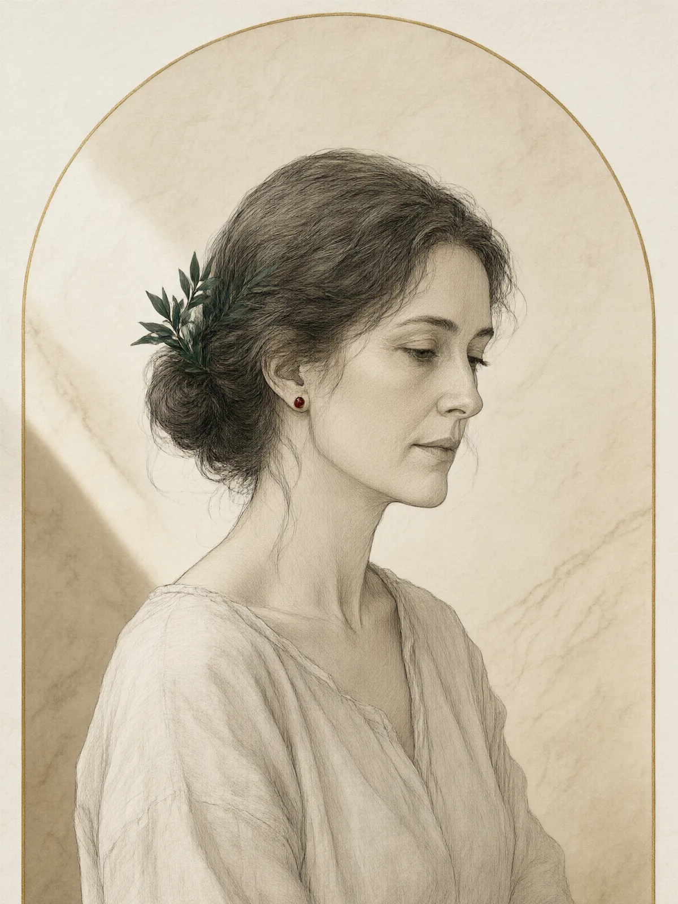

ПолинаЮнгианский аналитик · филолог
Полина
Начинала с текста: классическая филология научила её одному — любой сюжет про человека уже был рассказан, и в этом нет ничего обидного. Из литературы она ушла в глубинную психологию, потому что захотелось работать не с чужими героями, а с живыми женщинами, которые приходят и говорят: «я больше не понимаю, кто я».
Ведёт аналитические группы и долгосрочные программы. Верит, что тень — не враг, а неприбранная комната, где хранится самое ценное.
МГУ · филологияМААП · аналитическая психология12 лет практикиЛичный анализ 300+ ч.
«Миф — это не побег от жизни. Это язык, на котором жизнь наконец можно рассказать целиком».